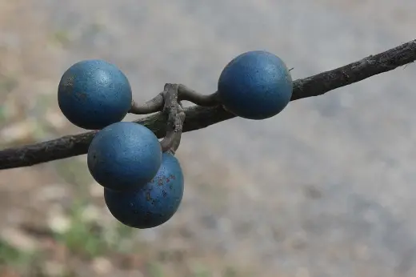

Blue quandong
Blue quandong is a wild fruit you can forage from May to November in Tropical north and Subtropical east coast. Tall rainforest tree with buttress roots and old red leaves scattered through the canopy; brilliant blue, marble-sized fruit.

When is blue quandong in season in Australia?
Blue quandong is usually in season May to November. Timing shifts with weather, latitude and altitude.
Where does blue quandong grow in Australia?
Blue quandong grows in New South Wales, Northern Territory, Queensland, Western Australia. Regions: Tropical north, Subtropical east coast.
How do you recognise blue quandong?
Tall rainforest tree with buttress roots and old red leaves scattered through the canopy; brilliant blue, marble-sized fruit.
How do you harvest blue quandong?
Pick only fully ripe fruit that comes away easily, into a shallow container so it doesn't crush. Leave plenty on the plant for birds and wildlife.
How do you eat blue quandong?
Thin, tart flesh nibbled fresh or cooked into sauces.
How do you store blue quandong?
Best fresh.
What is blue quandong good for?
Vitamin C.